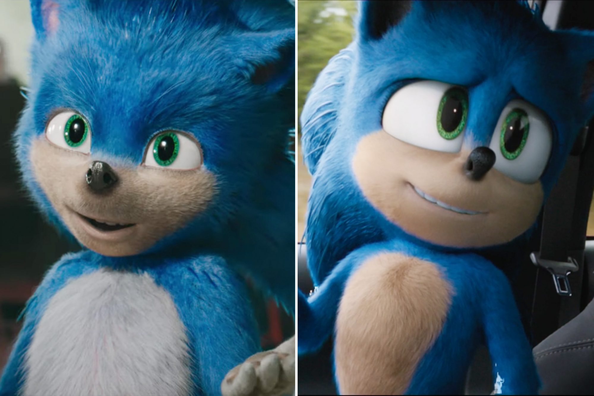

¿Por qué el Valle Inquietante
es muy importante en el diseño?
Escrito por Brian Uscanga
Hace 6 hrs.
Con el reciente estreno de la película “Sonic 2”, era inevitable que el público no hiciera remembranza de lo que alguna vez fue el diseño del erizo azul en el primer tráiler del filme 2 años atrás. Solo fue cuestión de tiempo para que el público expresara lo disconformes que se sentían con el diseño adaptado del carismático personaje y de hecho, fueron tantas las críticas que recibió este diseño que el mismo estudio que estaba llevando a cambio la adaptación live-action se propuso hacer un mejor trabajo y volver a diseñar el personaje.
Como podemos ver, gracias a que este año se estrenó una secuela, el nuevo diseño fue más ameno con el público y es seguro decir que fue un éxito, sin embargo, el suceso ocurrido con el primer diseño dio de qué hablar dentro del área del diseño y del cine, volviendo más presente el tema del Uncanny Valley, o el Valle Inquietante como es llamado en español.
El término Valle Inquietante fue nombrado por el japonés Masahiro Mori para explicar cómo funciona la empatía en el ser humano. El concepto es sencillo: si un ser u objeto posee cualidades humanas, a las personas se les hará más fácil desarrollar empatía. Siempre que este ser u objeto muestre rasgos o comportamientos similares a las personas, estas tendrán una reacción positiva, desafortunadamente, si estos rasgos muestran un nivel de similitud casi igual al de un humano, las personas dejarán de sentir esa empatía y en cambio comenzarán a presentar inquietud ¿Por qué será así?
Masahiro Mori explica que la razón de esto es porque los humanos tienen un mecanismo cognitivo que les ayuda a diferenciar a un humano de un no-humano, por lo tanto, si un ser u objeto tienen una similitud extrema a un humano, este mecanismo cognitivo se agudiza y comienza a buscar rasgos que comúnmente son imperceptibles como micro facciones, movimientos respiratorios, comunicación corporal, etc. Al final, cuando la persona no nota estas cualidades, se activa una alerta en las personas y es lo que genera inquietud y disgusto.
Ese punto en el que los humanos dejan de tener empatía y comienzan a tener inquietud es el valle inquietante; el valle donde “caen” todos esos seres y cosas que el ser humano rechaza en defensa propia.
Mori explica que el efecto es similar al de ver un cadáver o ver un ser potencialmente mortal y que esto está altamente relacionado con el instinto de supervivencia que tienen por naturaleza los humanos, por eso, él recomienda no crear cosas que simulen ser humanos y que procuren alejarse lo más posible del Valle Inquietante.
Otra ocasión donde el Valle Inquietante se hizo presente y apeló al desagrado de las personas fue con la adaptación a cine de la obra musical Cats. Los críticos expresaron que había algo erróneo en ver como colas de gato salían de traseros humanos y que simplemente se sentía erróneo.
Still de la película de Cats, 2019.
A pesar de la naturaleza subjetiva de las opiniones, gracias a que existe una explicación lógica por la cual sucede este tipo de rechazo, es posible decir que subjetivamente es lo que debía pasar.
Sin embargo, el tema del Valle Inquietante no es solo un camino con una pared al final. Han habido filmes y diseños que han sabido como rozar los bordes del Valle Inquietante sin caer en la fatalidad, como fue en la película del 2019 Alita: Battle Angel, donde podemos ver a una Alita (Rosa Salazar) de ojos gigantes viviendo en una ciudad habitada por personas de aspecto ordinario sin tener algún tipo de apabullamiento o desconección causada por el Valle Inquietante.

Still de la película Alita Battle Angel 2019
Artistas de VFX analizaron la razón de por qué esto ocurre, y resolvieron que el secreto está en capturar las micro facciones de los humanos, y más importante, hicieron evidente que la chica que se está viendo en pantalla no tiene la intención de verse como un humano que podría estar viviendo en esta Tierra. Como resultado, tenemos a la audiencia en general mostrando agrado hacia el diseño y muchos canales de reacción en youtube expresando que les gustó el filme y que sintieron empatía hacia el personaje.
Sin embargo, aunque Masahiro Mori recomienda no acercarse al Valle Inquietante, hay contadas ocasiones donde esa inquietud es lo que se busca generar en la audiencia y es un área en la industria del terror y entretenimiento que puede ser explotada, como puede ser visto en el videojuego indie japonés Walk.

Still del videojuego "Walk"
El videojuego consiste en ser una niña que está de camino a su casa cuando una criatura alta y misteriosa comienza a perseguirla y debe de hacer todo lo posible para no ser encontrada.
La estética semi realista del juego y el personaje principal hacen contraste con la criatura que sigue a la niña que camina de la misma manera que lo hace una persona en la vida real y con más fluidez que las animaciones que se ven en pantalla.
Still de la película Annihilation, 2018
Un filme que igual ha empleado la inquietud que genera el Valle Inquietante es “Aniquilación”, protagonizada por Natalie Portman. En un punto de la película, aparece un ser que se mueve con la misma precisión y naturalidad de un humano que dan como resultado una sensación de temor e intranquilidad que es muy efectiva para la narrativa de la película y la audiencia.
Al final, aunque el Valle es un tema que del cuál está disponible todo el conocimiento necesario para comprenderlo y entender cómo funciona y por qué causa los efectos que hace, es merecedor remarcar que hay una gran oportunidad en el área del entretenimiento para explotar el factor perturbador que este puede causar en el público en obras de thriller o suspenso que tendrán por seguro una fuerte reacción por parte del público.
De igual manera, aunque las palabras de Mazahiro Mori parecen desalentadoras, es seguro tomar por sentado que el mundo de la robótica y el entretenimiento no se dará por vencido tan fácil a la idea de generar algo lo más cercano a un humano y ver el impacto que habrá en las personas el día que esto se logré.
¿Qué opinas?¿Conoces algún personaje o diseño que haya caído en el Valle Inquietante?
Still de la película de Breaking Dawn, saga de Twilight, 2012
Contenido Reciente


Comentarios

Mario Alberto C.
No me gustó mucho como redactaron algunas cosas, la verdad espero algo mejor en el futuro, saludos, echenle ganas.

Elizabeth Mateo Sanz
amé!! me encanta este tipo de contenido!! ojalá puedan hacer más, me voy a suscribir.
Jorge Ignacio Palo
Me encantó la redacción de esté posteo, múy bien hecho y fundamentado.
Soy su fan.